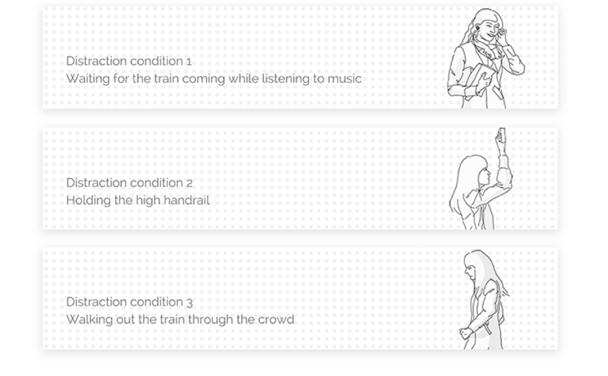
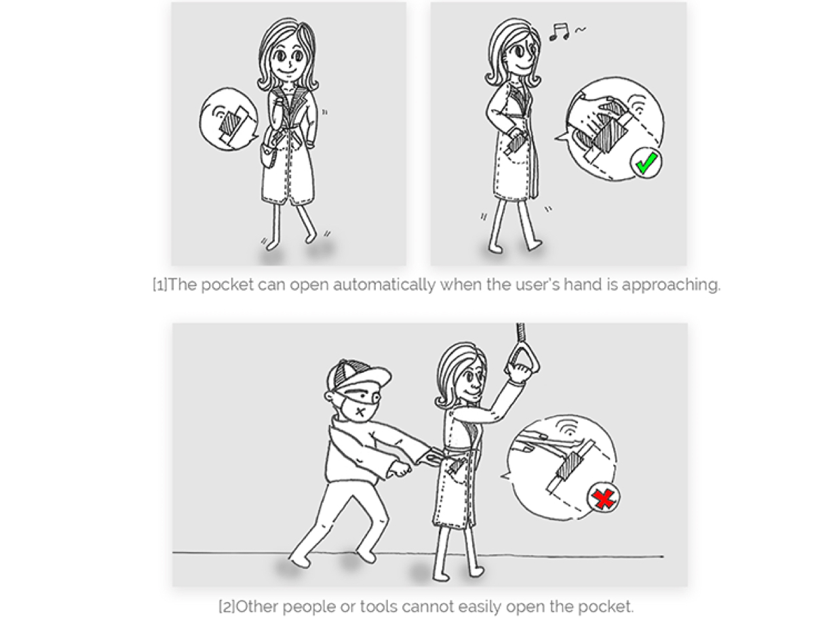
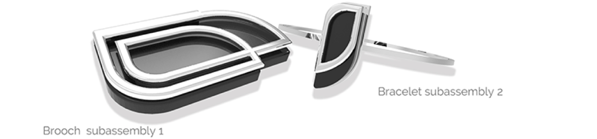
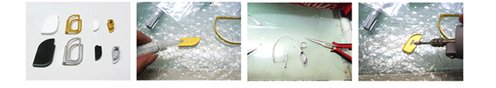
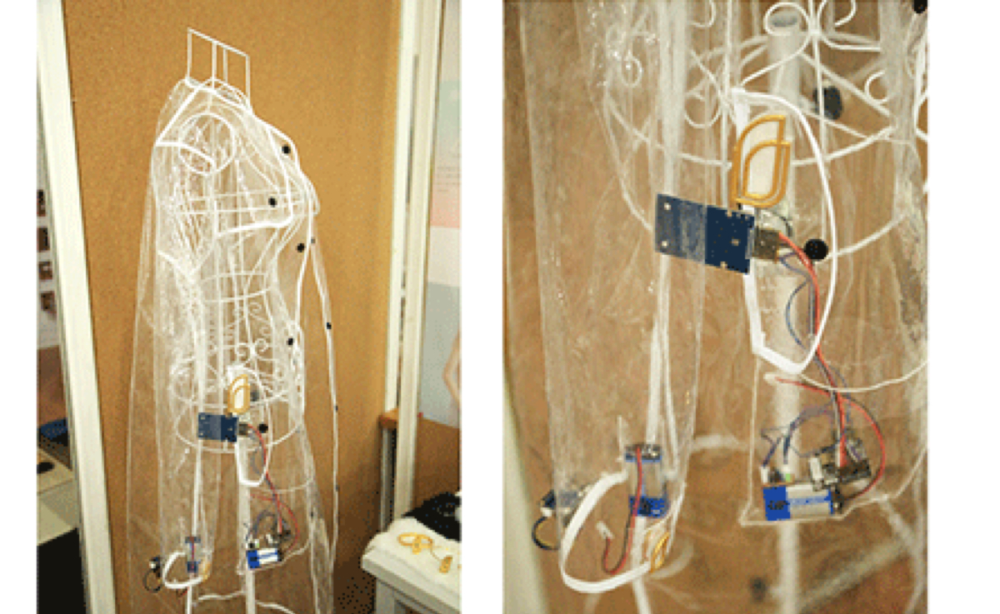
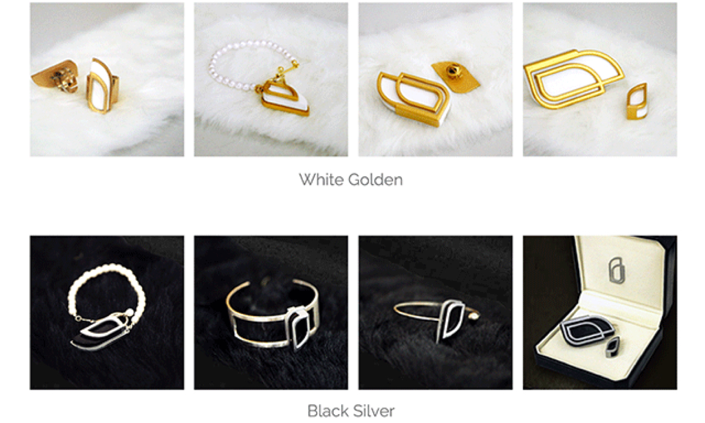

Overview
MAAT is a fashion wearable device that designed for women assets safety. To decrease stealing brought by the distraction when taking public transportation, MAAT uses motion induction, electric induction to ensure that only the user could take the assets from the pocket. Chic appearance and embodied interaction could help the user to be more confident and relaxed on the way in winter.
Patent for Invention: Motion-induced anti-theft wearable clothes, 201611243864.1, May 2017
Won the Excellent Graduation Project (Thesis)  (15 persons around the university) in BJUT
(15 persons around the university) in BJUT
Discover
The Problem
Once a winter morning, three girls in my class were stolen by a theft group at the gate of our university, included me.
In the picture, the theft is using the tweezers to steal the woman’s phone, which is just put into the right pocket while the bus coming into the station.
However, why did the events happen in winter?
Why the theft’s targets are girls?
Market Research
1. The wearable device for the females
2. The object tracker products
In the market, the tracker hardware mainly focuses on finding the object by location, based on the GPS, Bluetooth, RFID and WiFi technology. The inherence of these designs are not stealing precaution but finding the stuff after losing.
Market Research Results
[1] The assets protection product which designed for the females is a blank now;
[2] Technology is the foundation of the wearable device design;
[3] The females have specific demands and preferences of design;
[4] The wearable design could solve problems better and help women to be more confident and relaxed in the public environment by eliminating anxiety.
User Research
1. Observation in the public transportation
I noticed that most of the passengers were looking at their mobile phone screen while sitting or standing in the subway car.
Moreover, people cannot focus everything. So there can be some distraction time when several events are happening at the same time during the trip.

According to taking public transportation over the peak in the morning and evening in 3 months, I observed people’s behaviors and tried to find some pain points.
2. Online Survey
There were about 200 people answered this questionnaire , included 45% males and 55% females. The data analysis focuses on the female answers. About 43% answer’s assets have been stolen during the commute, included the wallet, mobile phone, and cash or card.
, included 45% males and 55% females. The data analysis focuses on the female answers. About 43% answer’s assets have been stolen during the commute, included the wallet, mobile phone, and cash or card.
Three conditions, taking a phone, looking at the screen and putting it into the pocket, are always exchanging. And they also provide a sign for thefts. If people have some other activities need to handle with or just distract, people will unintentionally put their phone in their pocket and thus thefts will have a chance to steal it immediately.
Behavior Analysis
| PERSONA
Storyboard
Feasibility Analysis
| C-box Interaction and Technical Analysis
Technical Solution
Appearance Design
1. Sign and symbol abstraction
MAAT, the goddess of order in Ancient Egyptian mythology, could bring protection for the women’s assets.
2. Sketching
3. Morphological chart for configuration design
4. Final design plan
5. 3D model and rendering
After sketching, I started to made 3D model to test the form and function feasibilities and finally chose Design 3 as the final plan.
Model Making Process
1. ABS 3D print model ( crude )
2. Electroplate golden and silver colors
3. Spray-paint white and black colors
4. White and black feather rear panel
5. Steel brooch accessory
6. Various ornaments accessory
Technical testing prototype final result
MAAT and accessaries final results
Design Demonstration
Reflections and Future
The most challenge part of this project was the technical solution part. To get a better output, I chose a solution which could not be programmed by myself. But with the help of an engineer, we finally got a good actualization and tested it successfully.
I applied for a patent after graduation. Moreover, based on the wire in the smart material and solar energy system, the volume of MAAT system could be reduced dramatically. Thus it could be more convenient to assemble on the clothes and cheap for the users.
Designed and coded by Faye Yifei Gong | All Rights Reserved | @fayegong.xyz© 2016-2019